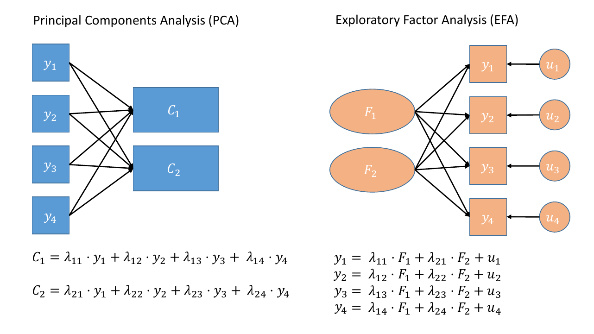
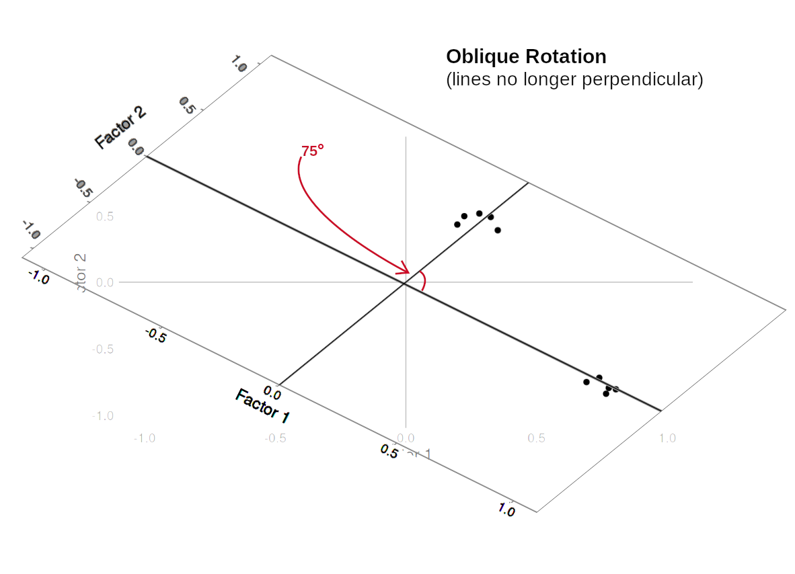

10. Exploratory Factor Analysis (EFA): Part 1
Relevant packages
- psych
- GPArotation
PCA vs FA
Where PCA aims to summarise a set of measured variables into a set of orthogonal (uncorrelated) components as linear combinations (a weighted average) of the measured variables, Factor Analysis (FA) assumes that the relationships between a set of measured variables can be explained by a number of underlying latent factors.
Note how the directions of the arrows in Figure 1 are different between PCA and FA - in PCA, each component \(C_i\) is the weighted combination of the observed variables \(y_1, ...,y_n\), whereas in FA, each measured variable \(y_i\) is seen as generated by some latent factor(s) \(F_i\) plus some unexplained variance \(u_i\).
It might help to read the \(\lambda\)s as beta-weights (\(b\), or \(\beta\)), because that’s all they really are. The equation \(y_i = \lambda_{1i} F_1 + \lambda_{2i} F_2 + u_i\) is just our way of saying that the variable \(y_i\) is the manifestation of some amount (\(\lambda_{1i}\)) of an underlying factor \(F_1\), some amount (\(\lambda_{2i}\)) of some other underlying factor \(F_2\), and some error (\(u_i\)).
In Exploratory Factor Analysis (EFA), we are starting with no hypothesis about either the number of latent factors or about the specific relationships between latent factors and measured variables (known as the factor structure). Typically, all variables will load on all factors, and a transformation method such as a rotation (we’ll cover this in more detail below) is used to help make the results more easily interpretable.1
Suitability of items for EFA
There are various ways of assessing the suitability of our items for exploratory factor analysis, and most of them rely on examining the observed correlations between items.
Look at the correlation matrix
Use a function such as cor or corr.test(data) (from the psych package) to create the correlation matrix.
Bartlett’s Test
The function cortest.bartlett(cor(data), n = nrow(data)) conducts “Bartlett’s test”. This tests against the null that the correlation matrix is proportional to the identity matrix (a matrix of all 0s except for 1s on the diagonal).
- Null hypothesis: observed correlation matrix is equivalent to the identity matrix
- Alternative hypothesis: observed correlation matrix is not equivalent to the identity matrix.
Kaiser, Meyer, Olkin Measure of Sampling Adequacy
You can check the “factorability” of the correlation matrix using KMO(data) (also from psych!).
- Rules of thumb:
- \(0.8 < MSA < 1\): the sampling is adequate
- \(MSA <0.6\): sampling is not adequate
- \(MSA \sim 0\): large partial correlations compared to the sum of correlations. Not good for FA
Check for linearity
It also makes sense to check for linearity of relationships prior to conducting EFA. EFA is all based on correlations, which assume the relations we are capturing are linear.
You can check linearity of relations using pairs.panels(data) (also from psych), and you can view the histograms on the diagonals, allowing you to check univariate normality (which is usually a good enough proxy for multivariate normality).
Exercises: Conduct Problems
Data: Conduct Problems
A researcher is developing a new brief measure of Conduct Problems. She has collected data from n=450 adolescents on 10 items, which cover the following behaviours:
- Stealing
- Lying
- Skipping school
- Vandalism
- Breaking curfew
- Threatening others
- Bullying
- Spreading malicious rumours
- Using a weapon
- Fighting
Your task is to use the dimension reduction techniques you learned about in the lecture to help inform how to organise the items she has developed into subscales.
The data can be found at https://uoepsy.github.io/data/conduct_probs.csv
1. Check Suitability
Question 1
Read in the dataset from https://uoepsy.github.io/data/conduct_probs.csv.
The first column is clearly an ID column, and it is easiest just to discard this when we are doing factor analysis.
Create a correlation matrix for the items.
Inspect the items to check their suitability for exploratory factor analysis.
2. How many factors?
Question 2
How many dimensions should be retained? This question can be answered in the same way as we did above for PCA.
Use a scree plot, parallel analysis, and MAP test to guide you.
You can use fa.parallel(data, fm = "fa") to conduct both parallel analysis and view the scree plot!
3. Perform EFA
Now we need to perform the factor analysis. But there are two further things we need to consider, and they are:
- whether we want to apply a rotation to our factor loadings, in order to make them easier to interpret, and
- how do we want to extract our factors (it turns out there are loads of different approaches!).
Rotations?
Rotations are so called because they transform our loadings matrix in such a way that it can make it more easy to interpret. You can think of it as a transformation applied to our loadings in order to optimise interpretability, by maximising the loading of each item onto one factor, while minimising its loadings to others. We can do this by simple rotations, but maintaining our axes (the factors) as perpendicular (i.e., uncorrelated) as in Figure 3, or we can allow them to be transformed beyond a rotation to allow the factors to correlate (Figure 4).



In our path diagram of the model (Figure 5), all the factor loadings remain present, but some of them become negligible. We can also introduce the possible correlation between our factors, as indicated by the curved arrow between \(F_1\) and \(F_2\).

Factor Extraction
PCA (using eigendecomposition) is itself a method of extracting the different dimensions from our data. However, there are lots more available for factor analysis.
You can find a lot of discussion about different methods both in the help documentation for the fa() function from the psych package:
Factoring method fm=“minres” will do a minimum residual as will fm=“uls”. Both of these use a first derivative. fm=“ols” differs very slightly from “minres” in that it minimizes the entire residual matrix using an OLS procedure but uses the empirical first derivative. This will be slower. fm=“wls” will do a weighted least squares (WLS) solution, fm=“gls” does a generalized weighted least squares (GLS), fm=“pa” will do the principal factor solution, fm=“ml” will do a maximum likelihood factor analysis. fm=“minchi” will minimize the sample size weighted chi square when treating pairwise correlations with different number of subjects per pair. fm =“minrank” will do a minimum rank factor analysis. “old.min” will do minimal residual the way it was done prior to April, 2017 (see discussion below). fm=“alpha” will do alpha factor analysis as described in Kaiser and Coffey (1965)
And there are lots of discussions both in papers and on forums.
As you can see, this is a complicated issue, but when you have a large sample size, a large number of variables, for which you have similar communalities, then the extraction methods tend to agree. For now, don’t fret too much about the factor extraction method.2
Question 3
Use the function fa() from the psych package to conduct and EFA to extract 2 factors (this is what we suggest based on the various tests above, but you might feel differently - the ideal number of factors is subjective!). Use a suitable rotation (rotate = ?) and extraction method (fm = ?).
conduct_efa <- fa(data, nfactors = ?, rotate = ?, fm = ?)
4. Inspect
We can simply print the name of our model in order to see a lot of information. Let’s go through it in pieces.
Loadings
Factor Analysis using method = minres
Call: fa(r = df, nfactors = 2, rotate = "oblimin", fm = "minres")
Standardized loadings (pattern matrix) based upon correlation matrix
MR1 MR2 h2 u2 com
item1 0.03 0.71 0.52 0.48 1
item2 0.01 0.77 0.60 0.40 1
item3 -0.02 0.68 0.45 0.55 1
item4 0.06 0.68 0.50 0.50 1
item5 -0.04 0.87 0.73 0.27 1
item6 0.63 -0.02 0.39 0.61 1
item7 0.89 0.00 0.80 0.20 1
item8 0.92 -0.01 0.84 0.16 1
item9 0.63 0.09 0.45 0.55 1
item10 0.67 -0.03 0.43 0.57 1Factor loading’s, like PCA loading’s, show the relationship of each measured variable to each factor. They range between -1.00 and 1.00 Larger absolute values represent stronger relationship between measured variable and factor.
- The columns that (depending upon estimation method) might be called
MR/ML/PCare the factors. The number assigned to is arbitrary, and they might not always be in a numeric order (this has to do with a rotated solution). Typically, the numbering maps to how much variance each factor account for. - h2: This is the “communality”, which is how much variance in the item is explained by the factors. It is calculated as the sum of the squared loadings.
- u2: This is \(1 - h2\). It is the residual variance, or the “uniqueness” for that item (i.e. the amount left unexplained).
- com: This is the “Item complexity”. It tells us how much a given item reflects a single factor (vs being “more complex” in that it represents multiple factors). It equals one if an item loads only on one factor, 2 if evenly loads on two factors, etc.
You can get these on their own using
conduct_efa$loadingsVariance Accounted For
MR1 MR2
SS loadings 2.92 2.80
Proportion Var 0.29 0.28
Cumulative Var 0.29 0.57
Proportion Explained 0.51 0.49
Cumulative Proportion 0.51 1.00Below the factor loadings, we have a familiar set of measures of the variance in the data accounted for by each factor. This is very similar to what we saw with PCA.
- SS loadings: The sum of the squared loadings. The eigenvalues.
- Proportion Var: how much of the overall variance the factor accounts for out of all the variables.
- Cumulative Var: cumulative sum of Proportion Var.
- Proportion Explained: relative amount of variance explained (\(\frac{\text{Proportion Var}}{\text{sum(Proportion Var)}}\).
- Cumulative Proportion: cumulative sum of Proportion Explained.
You can get these on their own using
conduct_efa$VaccountedFactor Correlations
With factor correlations of
MR1 MR2
MR1 1.00 0.43
MR2 0.43 1.00
Mean item complexity = 1Whether we see this section will depend if we have run a factor analysis with \(\geq 2\) factors and a rotation.
factor correlations: shows the correlation matrix between the factors.mean item complexity: shows the mean of thecomcolumn from the loadings above.
You can get these on their own using
conduct_efa$PhiTests, Fit Indices etc
We also get a whole load of other stuff that can sometimes be useful. These include: a test of an hypothesis that the 2 factors are sufficient; information on the number of observations; fit indices such as RMSEA, TLI RMSR etc; and measures of factor score adequacy (we’ll get to talking about factor scores next week).
Test of the hypothesis that 2 factors are sufficient.
df null model = 45 with the objective function = 5.03 with Chi Square = 2238
df of the model are 26 and the objective function was 0.09
The root mean square of the residuals (RMSR) is 0.02
The df corrected root mean square of the residuals is 0.02
The harmonic n.obs is 450 with the empirical chi square 13.7 with prob < 0.98
The total n.obs was 450 with Likelihood Chi Square = 40 with prob < 0.039
Tucker Lewis Index of factoring reliability = 0.989
RMSEA index = 0.035 and the 90 % confidence intervals are 0.008 0.055
BIC = -119
Fit based upon off diagonal values = 1
Measures of factor score adequacy
MR1 MR2
Correlation of (regression) scores with factors 0.96 0.94
Multiple R square of scores with factors 0.92 0.88
Minimum correlation of possible factor scores 0.84 0.76
Question 4
Inspect the loadings (conduct_efa$loadings) and give the factors you extracted labels based on the patterns of loadings.
Look back to the description of the items, and suggest a name for your factors
Question 5
How correlated are your factors?
We can inspect the factor correlations (if we used an oblique rotation) using:
conduct_efa$Phi
5. Write-up
Question 6
Drawing on your previous answers and conducting any additional analyses you believe would be necessary to identify an optimal factor structure for the 10 conduct problems, write a brief text that summarises your method and the results from your chosen optimal model.
PCA & EFA Comparison Exercise
Question 7
Using the same data, conduct a PCA using the principal() function.
What differences do you notice compared to your EFA?
Do you think a PCA or an EFA is more appropriate in this particular case?
Footnotes
When we have some clear hypothesis about relationships between measured variables and latent factors, we might want to impose a specific factor structure on the data (e.g., items 1 to 10 all measure social anxiety, items 11 to 15 measure health anxiety, and so on). When we impose a specific factor structure, we are doing Confirmatory Factor Analysis (CFA). This is not covered in this course, but it’s important to note that in practice EFA is not wholly “exploratory” (your theory will influence the decisions you make) nor is CFA wholly “confirmatory” (in which you will inevitably get tempted to explore how changing your factor structure might improve fit).↩︎
(It’s a bit like the optimiser issue in the multi-level model block)↩︎
You should provide the table of factor loadings. It is conventional to omit factor loadings \(<|0.3|\); however, be sure to ensure that you mention this in a table note.↩︎